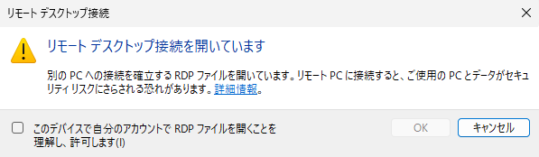
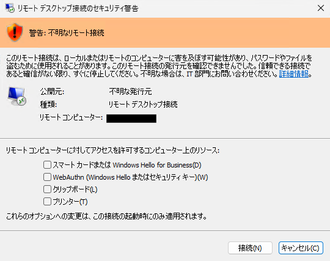
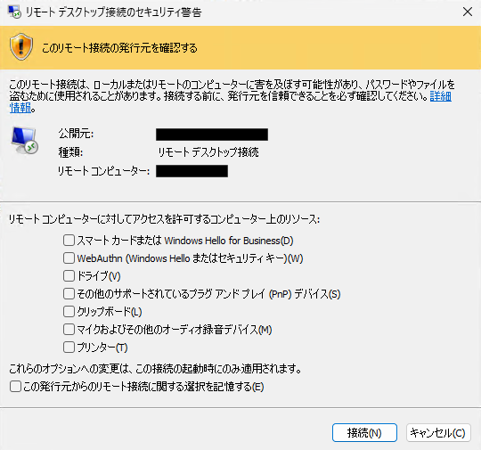

本記事はマイクロソフト社員によって公開されております。
Windows プラットフォーム サポートの亀井です。
以下のバージョンの Windows において、2026 年 4 月のセキュリティ更新プログラム適用後より、
RDP ファイル (.rdp) をダブル クリック等で開いた際の動作が変更され、
リモート デスクトップ接続アプリに新しいセキュリティ警告ダイアログが表示されるようになりました。
- Windows 10
- Windows 11
- Windows Server 2016
- Windows Server 2019
- Windows Server 2022
- Windows Server 2025
当該動作変更に関しまして、弊社サポート窓口にも多くのお問い合わせをいただいておりますので、
動作変更の概要、ダイアログの動作、推奨される対処策、シナリオ別の対応方法、よくある質問をご紹介します。
動作変更の詳細につきましては、以下の公開情報にも記載されておりますので、併せてご参照ください。
なお、今後の更新プログラムにより動作がさらに変更となる可能性がございます。
本記事の内容は公開日時点の情報となる点にご留意ください。
目次
概要について
対処策について
よくある質問について
リモート デスクトップとは
リモート デスクトップ (RDP: Remote Desktop Protocol) は、インターネットや社内ネットワークなどのネットワーク接続を介して、別の場所にあるコンピューターへ接続するための機能です。接続先のコンピューターの画面を手元のデバイスに表示させ、ファイルを開いたり、アプリケーションを実行したり、マウスやキーボードにより操作することができます。
接続に必要な設定情報 (接続先のコンピューター名や、リダイレクトするローカル リソースなど) をあらかじめ記述したファイルが RDP ファイル (.rdp) です。RDP ファイルを使用することで、接続の都度必要な情報を入力することなく、ダブル クリックするだけで目的のコンピューターに接続することが可能です。
一方で、RDP ファイルには、クリップボード、ドライブ、カメラ、プリンターなどのローカル デバイス/リソースをリモート コンピューターと共有する設定 (リダイレクト) を含めることができるため、悪意のある第三者が細工した RDP ファイルを介して、攻撃者が用意したサーバーへ接続させ、ローカル リソースの情報を窃取するような攻撃にも悪用されうる側面がございます。
今回の RDP セキュリティ警告の変更について
2026 年 4 月のセキュリティ更新プログラム以降、RDP ファイルを開いて接続を開始する際、新しいセキュリティ警告ダイアログが表示されるようになりました。
本変更は、上述の RDP ファイルを悪用したフィッシング攻撃などからユーザーを保護することを目的としており、具体的には以下の 2 点が主な変更内容となります。
初回起動時に、教育用ダイアログが表示される
更新プログラム適用後、そのアカウントで初めて RDP ファイルを開いた際に、RDP ファイルとは何か、どのようなフィッシング リスクがあるかを説明する教育用ダイアログが表示されます。RDP ファイルを開くたびに、リダイレクト リソースごとに明示的な許可が必要になる
従来は、RDP ファイル側で指定されたリダイレクトが既定で有効となっていましたが、本変更以降は、RDP ファイルが要求するすべてのリダイレクト (クリップボード、ドライブ、プリンター、カメラ、マイク等) は既定でオフ となります。ダイアログ上でユーザー様が明示的にチェックを入れた項目のみが有効化される動作となります。
また、以下の点にもご留意ください。
- 本変更の影響を受けるのは、RDP ファイルを開いて開始される接続のみ です。mstsc 等でコンピューター名を直接入力して開始する接続については、これまでと動作は変わりません。
- RemoteApp のショートカットや RD Web アクセスからダウンロードされる RDP ファイルも、本変更の対象となります。
- Azure Virtual Desktop や Windows 365 から取得する RDP ファイルは通常 Microsoft によって署名されているため、原則としてこれらのサービスへの接続時には新しいセキュリティ ダイアログは表示されません。
現在のダイアログの動作について
今回の更新プログラム適用後に RDP ファイルを開くと、以下の順序でダイアログが表示されます。
1. 初回起動ダイアログ (教育用ダイアログ)
更新プログラム適用後、そのアカウントで初めて RDP ファイルを開いた際に 1 度のみ表示されるダイアログです。
RDP ファイルとフィッシングのリスクに関する説明が記載されております。
このダイアログで接続を許可した後は、同じアカウントでの RDP ファイル接続時には再度表示されません。

注意: この初回起動ダイアログは、後述の RedirectionWarningDialogVersion レジストリを適用しても抑止することはできません。
2. 接続セキュリティ ダイアログ
RDP ファイルを開くたびに、接続が確立される前に表示されます。
接続先のコンピューターのアドレスや、RDP ファイルが要求しているリダイレクト項目 (クリップボード、ドライブ、プリンター、カメラ、マイク、スマート カードなど) ごとにチェック ボックスが表示されます。
すべてのリダイレクトは既定ではオフとなっており、ユーザーが明示的にチェックを入れた項目のみが有効化されます。
RDP ファイルに有効なデジタル署名が付与されており、接続元のコンピューターで当該署名の証明書が信頼されているかどうかにより、以下の 2 種類に分かれます。
(A) 検証可能な発行元を含まない RDP ファイル (デジタル署名なし、または信頼されていない)
RDP ファイルがデジタル署名されていない場合、または署名が信頼されていない場合には、ダイアログ上部に「警告: 不明なリモート接続」というバナーが表示され、公開元フィールドは「不明な発行元」と表示されます。
この場合、RDP ファイルを開くたびに毎回、必要なリダイレクト項目にチェックを入れ直す必要がございます。

(B) 検証可能な発行元を含む RDP ファイル (デジタル署名あり、信頼されている)
RDP ファイルに有効なデジタル署名が付与されており、かつ接続元のコンピューターで当該署名の証明書が信頼されている場合、
ダイアログ上部に「このリモート接続の発行元を確認する」というバナーが表示され、発行元の名前が表示されます。
この場合、ダイアログ下部に「この発行元からのリモート接続に関する選択を記憶する」というチェック ボックスが表示されます。
このチェックを入れて接続した場合、以降、同じ公開元の RDP ファイルを開いた際には、チェックを入れたリダイレクト項目の選択状態が記憶される動作となります。

推奨される対処策について
「毎回ダイアログが表示されて煩わしい」や 「リダイレクト設定 (プリンターなど) を記憶させたい」などセキュリティ警告を抑制されたい場合、推奨する対応は、RDP ファイルに適切なデジタル署名を付与し、接続元のコンピューターで当該証明書を信頼させる方法となります。
上述の通り、接続元が信頼している証明書で署名された RDP ファイルを開いた場合には、「この発行元からのリモート接続に関する選択を記憶する」チェック ボックスを利用することで、毎回リダイレクトするリソースのチェックを入れ直す必要が無くなり、リダイレクト項目の選択状態を保持することが可能です。
署名をされる場合は、信頼される認証機関より発行された証明書等を利用して、rdpsign.exe コマンドで RDP ファイルに署名ください。
また、rdpsign コマンドの詳細は以下の公開情報をご参照ください。
シナリオ別の対処策について
シナリオ 1: RemoteApp / RD Web アクセス環境をご利用の場合
RD Web アクセスよりダウンロードされるデスクトップ接続、 RemoteApp 接続用の RDP ファイルも本変更の対象となります。
RD 展開プロパティにおきまして、証明書のペインより接続元が信頼しうる証明書を設定することで、発行される RDP ファイルに署名を付与することが可能です。
クライアント端末で当該証明書が信頼されている場合、ダイアログは「検証可能な発行元を含む RDP ファイル」として表示されます。
シナリオ 2: 社内配布用の RDP ファイルを利用されている場合
社内で配布している RDP ファイルについては、証明書にて rdpsign.exe で署名を実施し、GPO 等でクライアントに証明書を配布いただく方法を推奨いたします。
シナリオ 3: 一時的に以前の動作へ戻したい場合 (暫定対策)
業務影響等により、恒久対応 (署名) までの間、一時的に従来のダイアログ動作へ戻す必要がある場合には、以下のレジストリ値を設定することで、接続セキュリティ ダイアログ (2 つ目のダイアログ) を更新前のバージョンのダイアログに戻すことが可能です。
| 項目 | 値 |
|---|---|
| キー | HKLM\Software\Policies\Microsoft\Windows NT\Terminal Services\Client |
| 名前 | RedirectionWarningDialogVersion |
| 種類 | REG_DWORD |
| データ | 1 |
重要:
- このレジストリを設定する方法は、あくまで一時的な切り分けや移行期間中の暫定対策であり、恒久的な対応としてご利用は推奨しておりません。
- 今後の Windows 更新プログラムにより、本レジストリが無効化される可能性があるため、早期の移行を推奨します。
- このレジストリを設定しても、初回起動ダイアログ (教育用ダイアログ) は抑止されません。
よくある質問
Q1. リダイレクト項目の選択を記憶させ、毎回チェックを入れる必要を無くすことはできますか?
A. RDP ファイルに有効なデジタル署名を付与し、接続元コンピューターで当該証明書が信頼されている場合にのみ、「この発行元からのリモート接続に関する選択を記憶する」チェック ボックスが表示され、リダイレクト項目の選択状態を記憶させることが可能です。
署名されていない RDP ファイルの場合、当該チェック ボックスは表示されず、記憶させることはできません。
Q2. セキュリティ警告ダイアログ自体を完全に非表示にすることはできますか?
A. いいえ、できません。公開情報 より、「RDP ファイルを開くたびに、接続が確立される前にセキュリティ ダイアログが表示されます」と記載されており、本ダイアログを完全に抑止する設定は提供されておりません。
Q3. mstsc からコンピューター名を直接入力して接続する場合にも、このダイアログは表示されますか?
A. いいえ、表示されません。本更新プログラムで影響を受けるのは、RDP ファイルを開くことで開始される接続のみです。
Q4. セッション コレクション側でリダイレクトを有効にしているのに、対象のリソースがリダイレクトされません。
A. 今回の変更により、セッション コレクション側でリダイレクトを許可していても、クライアント側で RDP ファイルを開く際のダイアログで対象のリソースのリダイレクトを明示的にオプトイン (チェック) しない限り、リダイレクトは動作しません。
クライアント側でリソースのリダイレクトを明示的に許可しているかご確認ください。
Q5. GPO 等で、既定で特定のリダイレクトにチェックを入れた状態にすることはできますか?
A.
署名されていない RDP ファイルにおいて、既定でリダイレクトへチェックを付与する設定は提供されておりません。
本動作変更の目的が「悪意のある RDP ファイルによる意図せぬローカル デバイスへのリダイレクトを防止する」ことにあるため、
ユーザー様による明示的な許可 (オプトイン) が必要となっております。
署名されている RDP ファイルにつきましては、接続時に表示されるセキュリティ警告ダイアログ上で「この発行元からのリモート接続に関する選択を記憶する」にチェックを入れていただくことで、以降、同じ公開元の RDP ファイルで接続する際に、リダイレクト項目の選択状態が記憶される動作となります。
Q6. RedirectionWarningDialogVersion レジストリで、新しい初回起動ダイアログも抑止できますか?
A. いいえ、できません。当該レジストリは 接続セキュリティ ダイアログ (2 つ目のダイアログ) を旧バージョンに戻すためのものであり、初回起動ダイアログ (教育用ダイアログ) は抑止されません。
参考情報
- リモート デスクトップ (RDP) ファイルを開くときのセキュリティ警告について | Microsoft Learn
- rdpsign | Microsoft Learn
- Windows App とは? | Microsoft Learn
本記事の内容が、皆様の RDP ファイルを取り巻く環境の運用のご参考となれば幸いです。